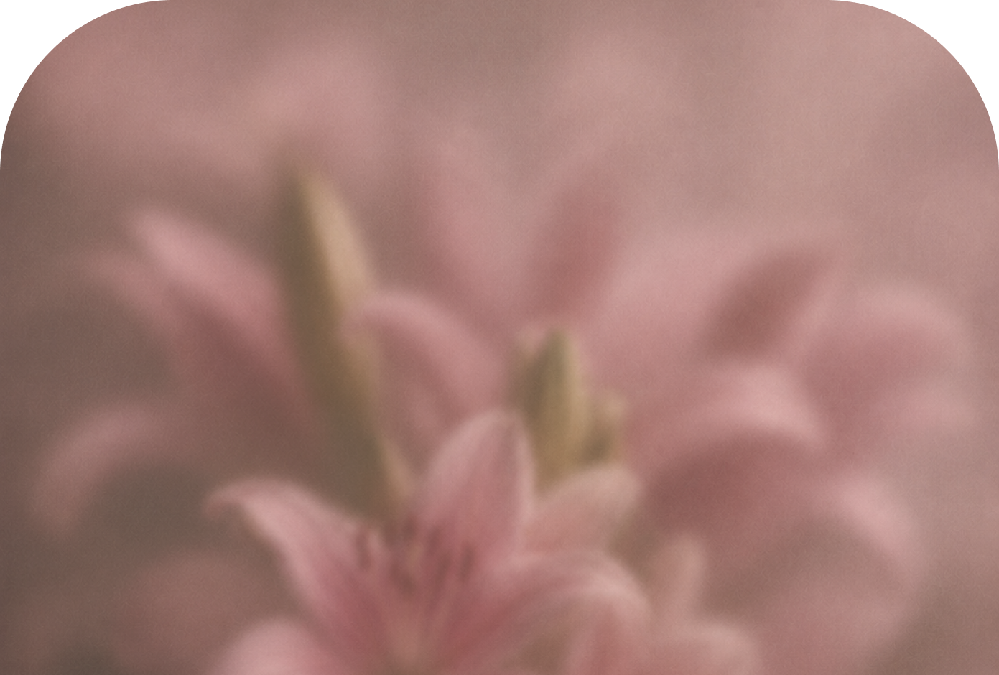
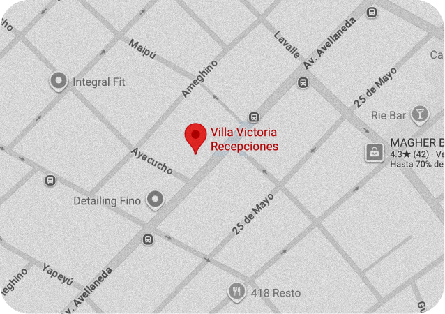
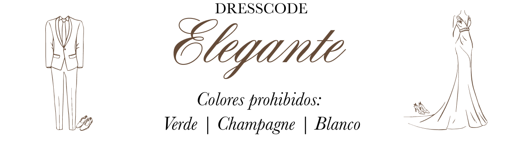
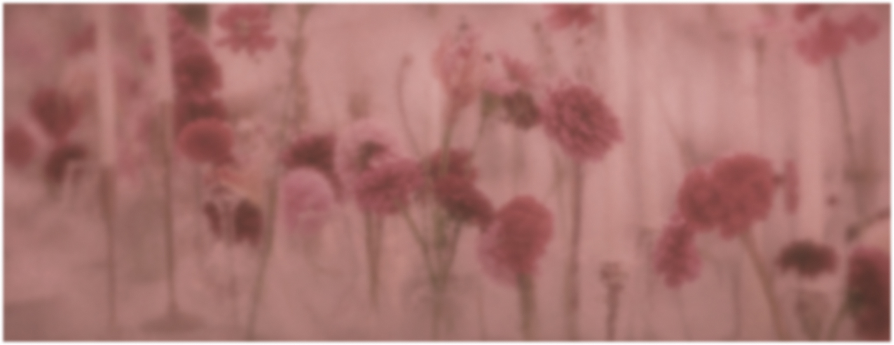
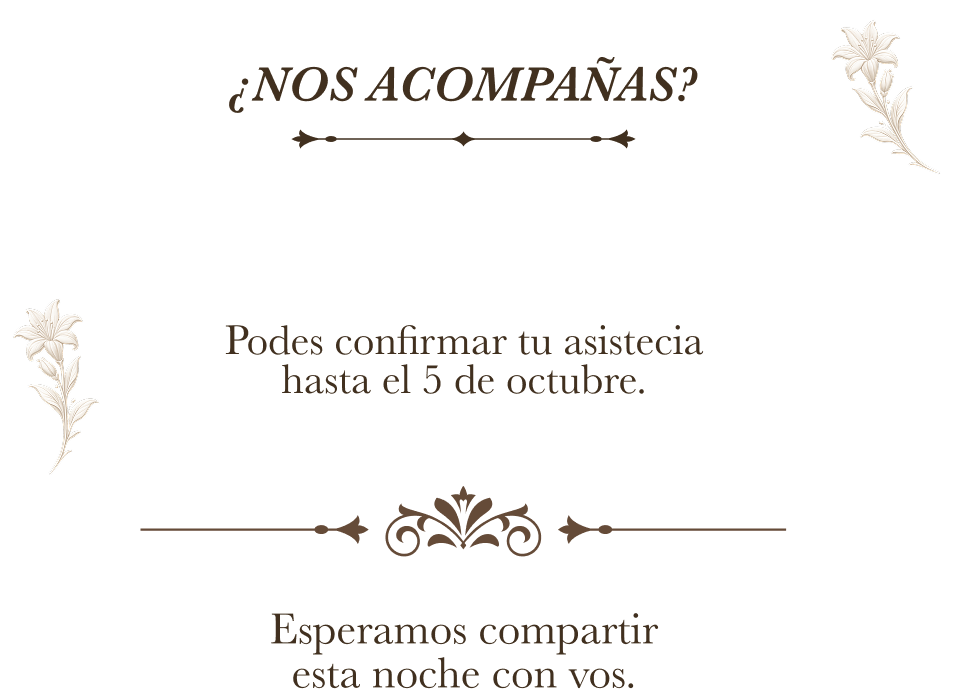

Hay momentos que merecen
convertirse en recuerdos.
Queremos que seas parte de uno de ellos.
Estás invitado a celebrar
los XV años de Matilda.

Fecha
31/10/2026
Horario
21hs
Lugar
Villa Victoria
Av. Avellaneda 323, Bernal

Tocá el mapa para abrirlo en Google Maps



00
:
00
:
00
:
00

Confirmar asistencia